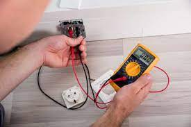
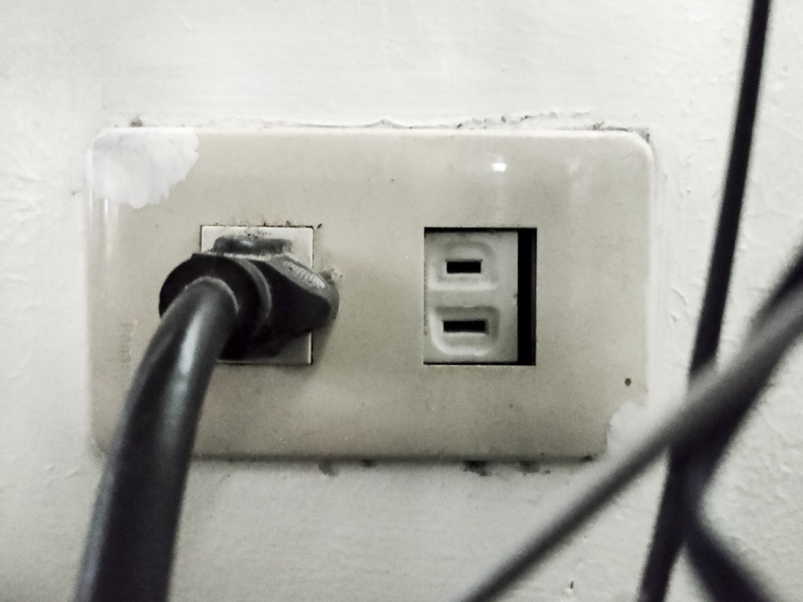
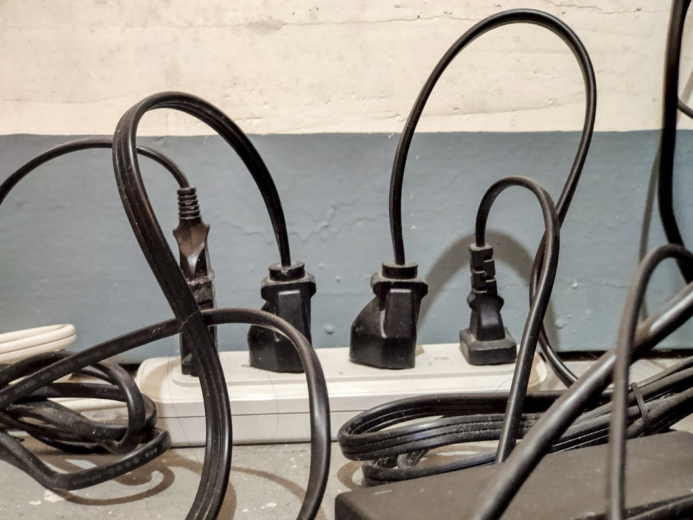
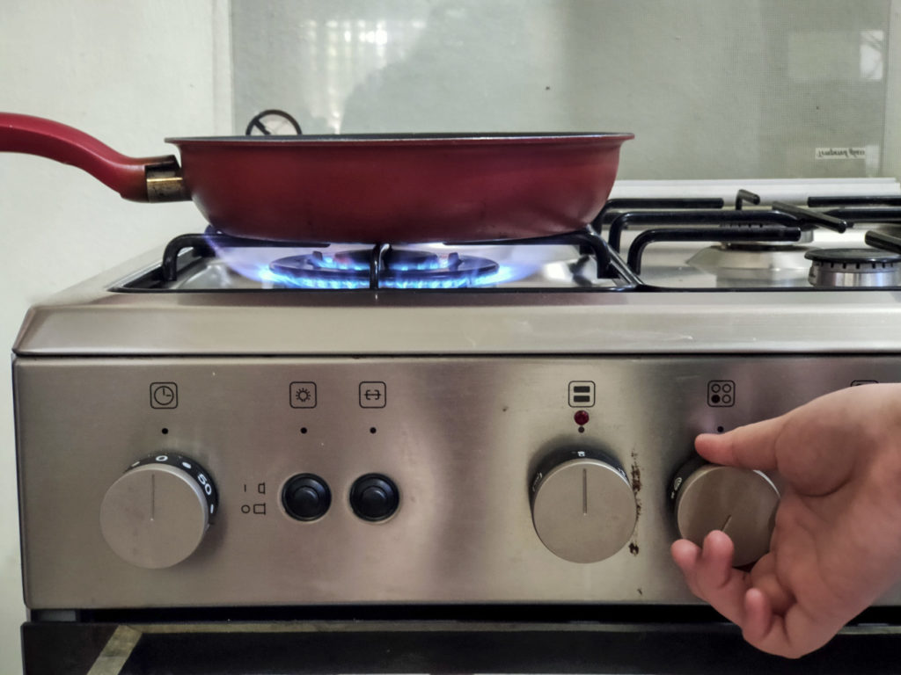
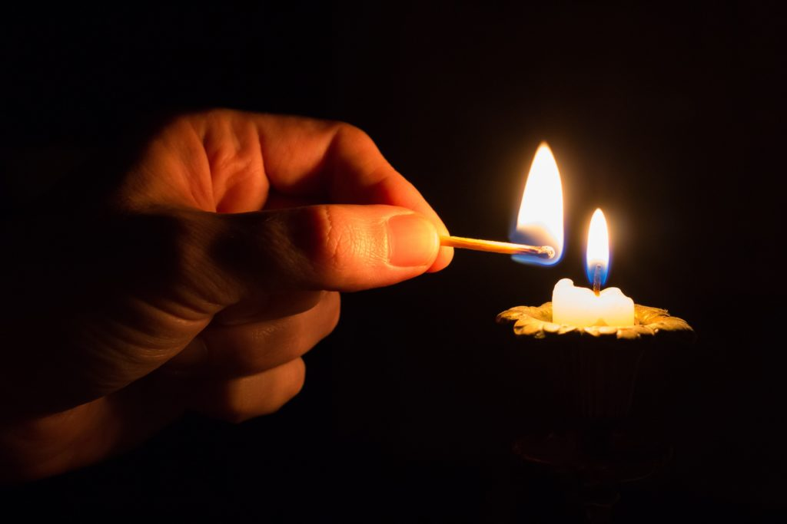

Fires are visible effects of combustion, which is a special kind of chemical reaction. It needs three oxygen, fuel, and heat in order to form. These are also known as the fire triangle.
Fire hazards can be anything that will increase the probability of a fire occuring, or increase the severity of a possible fire.
Examples include:
| Safety Measures to Prevent a Fire at Home |
|---|
|  |
1. Check electrical connectionsFaulty electrical wiring is one of the leading causes of house fires. Flickering lights, sparking switches and plus, and burning smell when appliances are plugged in are warning signs that should not be ignored. Frayed wires, damaged sockets, and other defective electrical fixtures should be replaced as soon as possible. Electrical cords should be easily seen, untangled, and properly placed. |
|  |
2. Unplug items when not in useNeglected home appliances or devices may also start fires. Home appliances still consume electricity even when turned off. They can still overheat, which could possibly lead to a fire. Unplugging them when not in use will lower the chances of a fire breaking out. |
|  |
3. Avoid plugging several devices into an extension cordPlugging in many devices into an extension cord could overheat the sockets and might start a fire. Do not practice electrical overloading as much as possible. Solo outlets should be allotted for appliances like aircon and refrigerator. If you think you need to rewire your connections to accomodate all your appliances and other elctrical devices, consulting a professional electrician would be best. |
|  |
4. Never leave an open stove unattendedYou should keep an eye on the stove whenever you are cooking. Ask someone to take over if you need to leave the kitchen, or set a timer so you do not forget that the stove is running. |
|  |
5. Secure lighted candlesAny candle in use should be monitored and secured on a candle holder. They should be placed in areas where they cannot be knocked over. Lighted candles should be out of reach from especially children and pets. Do not place them near flammable materials like carpets, curtains, mattings, and papers. Rechargeable candles, lamps, and flashlights are recommended over candles in case of a power-out. |